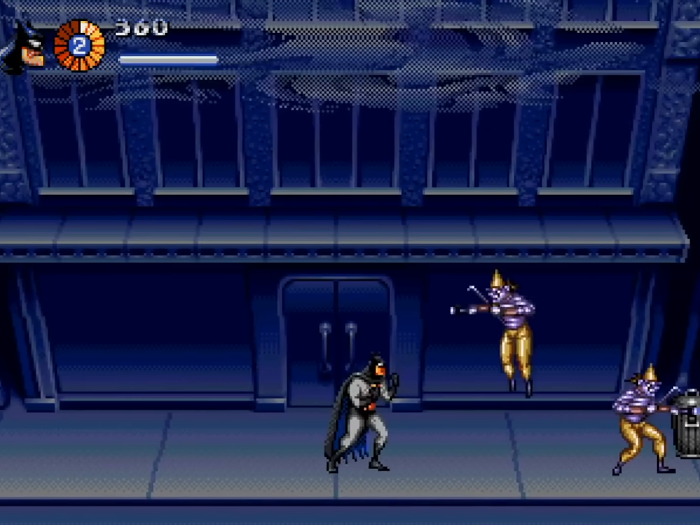
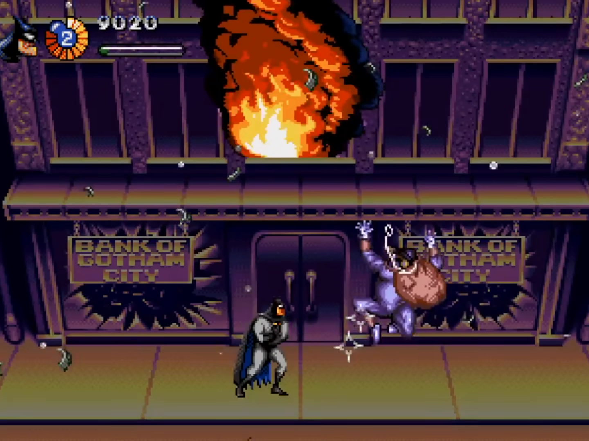
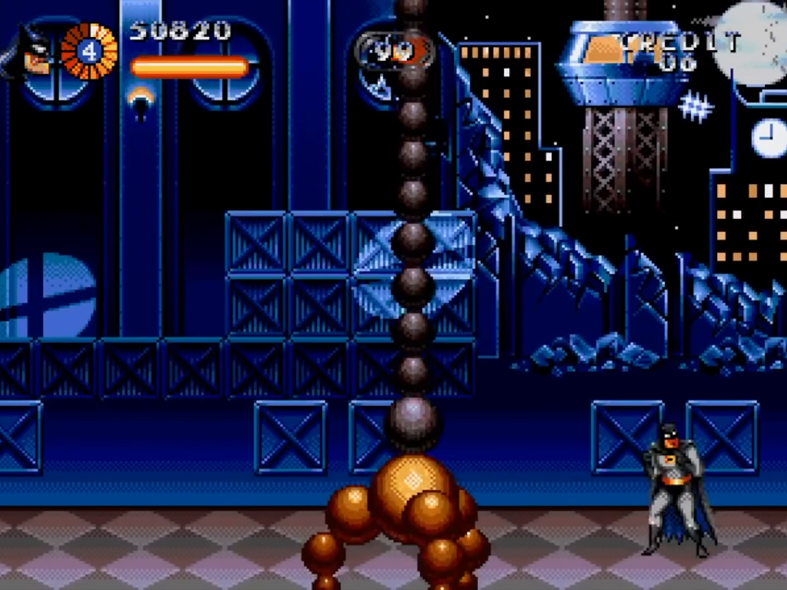
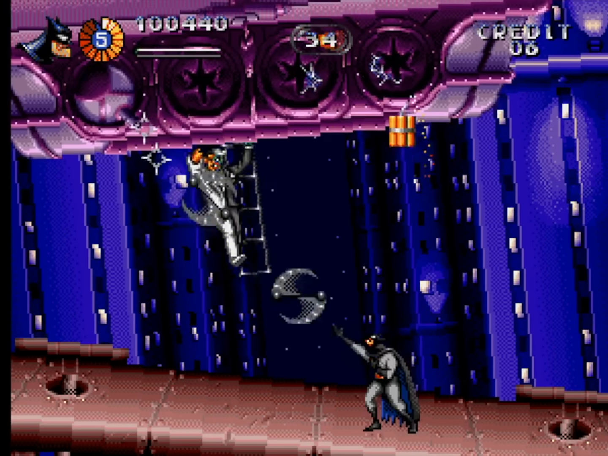
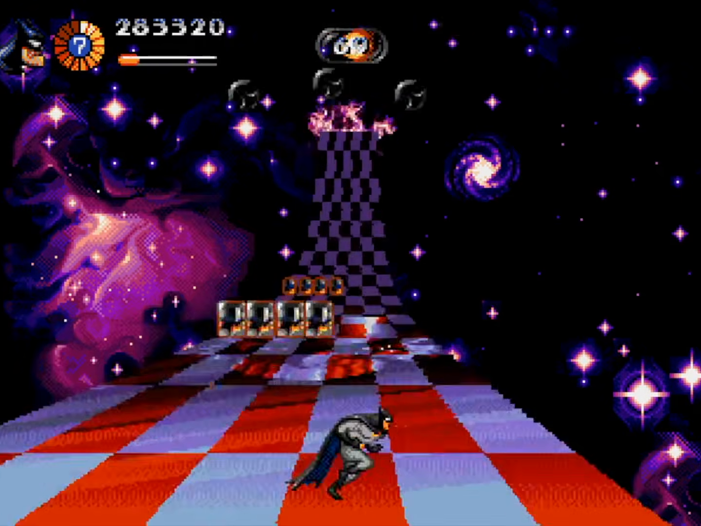
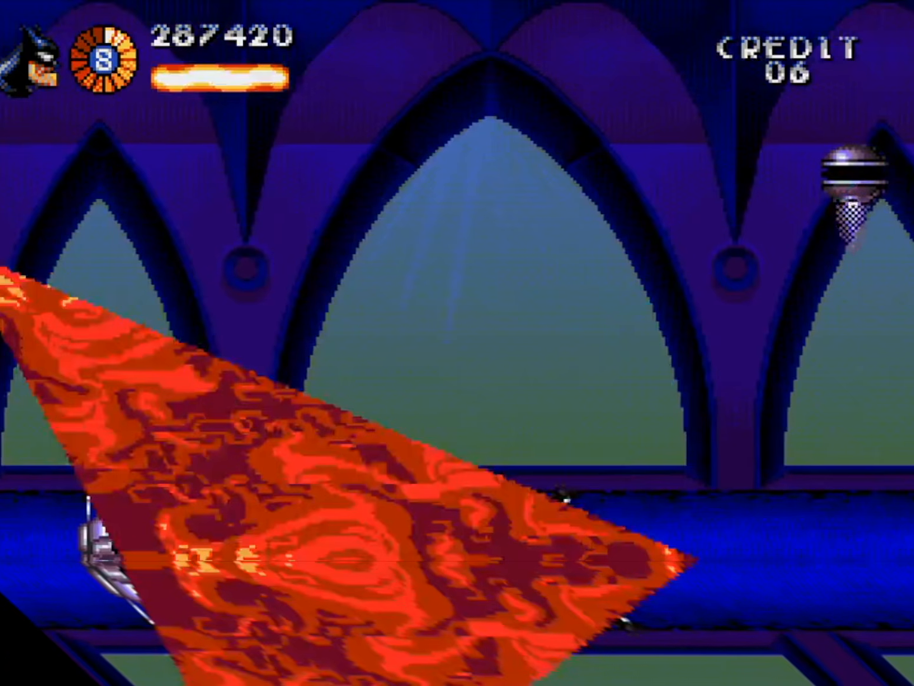
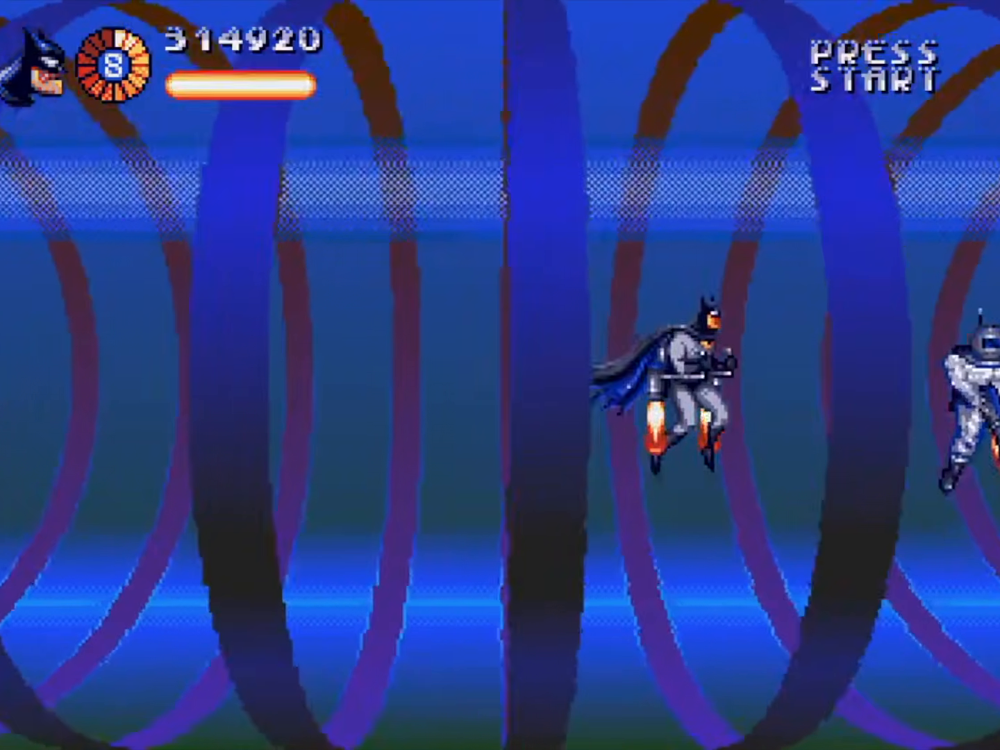

Sorti en 1995 sur Mega Drive par le studio Clockwork Tortoise, ce chef-d'œuvre du Run & Gun a poussé le matériel 16-bit de Sega dans ses derniers retranchements : sol 3D cisaillé, rotations de dirigeables sans puce DSP, faisceaux lumineux tramés par octets et combats intenses accompagnés de la bande-son industrielle de Jesper Kyd.
Ce document établit l'analyse technique des deux vidéos de Jon Burton (Coding Secrets) et trace la feuille de route chirurgicale pour développer votre prototype complet sous Godot 4.x.
Pour reproduire ce jeu à l'identique, il ne s'agit pas de créer un jeu 2D moderne déguisé en rétro, mais de comprendre comment chaque registre du VDP Sega (Yamaha YM7101) se traduit en concepts natifs de Godot 4.x.
| Fonctionnalité Rétro (Mega Drive) | Composant Matériel Sega (1995) | Technique Clockwork Tortoise | Équivalent Moderne Godot 4.x |
|---|---|---|---|
| Sol 3D & Façades (Perspective) | Table H-Scroll VRAM + H-Interrupt | Cisaillement horizontal ligne par ligne (Raster Skewing) proportionnel à $(1 - y/H)$ | shader_type canvas_item + décalage UV.x += (1.0 - depth) * skew |
| Flammes Organiques | Animation 6 frames + Déplacement H-Scroll | Onde sinusoïdale modulée par la hauteur appliquée à l'interruption horizontale | AnimatedSprite2D + Shader d'oscillation sin(uv.y * freq + TIME * spd) |
| Boss de Sphères 3D & Serpents | Table de sprites matériels (max 80) + CRAM | Calcul Lissajous CPU, tri en profondeur $Z$, scaling par sprite size, palette dimming | MultiMeshInstance2D + GDScript mettant à jour transforms et couleurs en 1 seul Draw Call |
| Rotation Pseudo Mode 7 (Dirigeable) | V-Scroll 16-pixel Column + Line H-Scroll | Découpage vertical par colonnes de 16 pixels + compensation continue horizontale | Shader quantifiant FRAGCOORD.x / 16.0 combiné à l'inclinaison linéaire |
| Projecteur Vectoriel & Faisceau | VRAM Tile Buffer + Écriture par octet | Tracé de 2 pixels par octet (Byte Plotting) + Matrice Bayer 4x4 pour transparence CRT | Shader CanvasItem appliquant la matrice de seuil Bayer 4x4 sans mélange alpha flou |
| Route 3D & Damier OutRun | Plan B + Palette Cycling à la ligne | Projection hyperbolique $1/y$, virage quadratique, alternation de couleur par index | ColorRect avec Raster Road Shader calculant bandes & asphalte |
| Tunnel Cylindrique 3D | Calcul polaire précalculé en ROM | Projection polaire $(\text{atan2}, 1/r)$ avec rotation angulaire continue | Polar Coordinates CanvasItem Shader avec filter_nearest |
Tirés des deux vidéos de référence (Vidéo 1 : Z0S92Fs5gOg et Vidéo 2 : M7b0uUEl5hc), voici les simulateurs interactifs et les codes Godot 4 prêts pour la production.
Batman patrouille dans les rues de Gotham. Observez l'effet saisissant de perspective fuyante sur les pavés au sol et l'illusion 3D des façades d'immeubles sans aucun calcul de polygone.

shader_type canvas_item;
uniform float skew_factor : hint_range(-2.0, 2.0) = 0.85;
uniform float scroll_speed = 1.2;
uniform float horizon_cutoff : hint_range(0.0, 1.0) = 0.38;
uniform sampler2D street_texture : repeat_enable, filter_nearest;
void fragment() {
vec2 uv = UV;
// Au-dessus de la ligne d'horizon, on ne dessine rien (ou le décor lointain)
if (uv.y < horizon_cutoff) {
discard;
}
// Normalisation de la profondeur le long de la hauteur du sol
float depth = (uv.y - horizon_cutoff) / (1.0 - horizon_cutoff);
// Décalage horizontal par ligne de balayage (émulation H-Scroll VDP)
uv.x += (1.0 - depth) * skew_factor;
// Défilement continu infini sans saccade
uv.x = fract(uv.x + TIME * scroll_speed);
COLOR = texture(street_texture, uv);
}TextureRect placé dans la moitié inférieure de la scène 2D avec filter_nearest. Vos décors de sol de Gotham auront la même fuyante saisissante que sur Mega Drive.
Au cœur de l'usine chimique, un brasier géant ondule de façon ultra-organique au premier plan grâce à une simple onde sinusoïdale injectée par ligne de balayage CRT.

shader_type canvas_item;
uniform float wave_freq : hint_range(1.0, 30.0) = 14.0;
uniform float wave_amp : hint_range(0.0, 0.25) = 0.09;
uniform float wave_spd : hint_range(0.0, 15.0) = 7.0;
void fragment() {
vec2 uv = UV;
// Facteur d'amplitude : 0.0 à la base (y=1.0), 1.0 au sommet (y=0.0)
float height_factor = pow(clamp(1.0 - uv.y, 0.0, 1.0), 1.3);
// Déplacement horizontal sinusoïdal simulant les micro-décalages d'H-Blank
float x_offset = sin(uv.y * wave_freq + TIME * wave_spd) * wave_amp * height_factor;
uv.x += x_offset;
COLOR = texture(TEXTURE, uv);
}AnimatedSprite2D sur les barils enflammés et tuyaux d'échappement pour reproduire fidèlement l'ambiance industrielle rétro.
Le boss de sphères dorées ondule dans les trois dimensions de l'espace. Jon Burton décortique comment l'invariance par rotation des sphères et un simple Z-Fog de palette CRAM créent une 3D spectaculaire sur Mega Drive.

extends MultiMeshInstance2D
@export var count: int = 22
@export var radius_x: float = 140.0
@export var radius_y: float = 65.0
@export var speed: float = 2.2
var timer: float = 0.0
func _ready() -> void:
multimesh.use_colors = true
multimesh.instance_count = count
func _process(delta: float) -> void:
timer += delta * speed
for i in range(count):
var angle: float = timer + float(i) * 0.32
var x: float = cos(angle) * radius_x
var y: float = sin(angle * 0.6) * radius_y
var z: float = sin(angle) # Profondeur [-1.0 (fond), 1.0 (devant)]
# Échelle proportionnelle à Z
var s: float = remap(z, -1.0, 1.0, 0.45, 1.35)
multimesh.set_instance_transform_2d(i, Transform2D(0.0, Vector2(s, s), 0.0, Vector2(x, y)))
# Simulation du Dynamic Palette Dimming
var lum: float = remap(z, -1.0, 1.0, 0.25, 1.0)
multimesh.set_instance_color(i, Color(lum, lum * 0.85, lum * 0.3, 1.0))Le gigantesque ballon dirigeable du Joker tangue et pivote au-dessus de la ville. Clockwork Tortoise contourne la limite du défilement vertical du VDP (limité à des blocs de 16px) pour simuler un véritable Mode 7 SNES.

shader_type canvas_item;
uniform float tilt_angle : hint_range(-0.5, 0.5) = 0.18;
uniform float strip_width = 16.0;
void fragment() {
vec2 uv = UV;
// Découpage en bandes verticales discrètes de 16 pixels (VDP Sega)
float col = floor(FRAGCOORD.x / strip_width);
// V-Scroll discret par tranche de colonne
float v_offset = (col - (1.0 / TEXTURE_PIXEL_SIZE.x) / (2.0 * strip_width)) * (tilt_angle * 0.05);
uv.y += v_offset;
// H-Scroll continu par ligne de balayage pour compenser la rotation
uv.x += (uv.y - 0.5) * tilt_angle;
if (uv.x < 0.0 || uv.x > 1.0 || uv.y < 0.0 || uv.y > 1.0) {
discard;
}
COLOR = texture(TEXTURE, uv);
}La Batmobile fonce à toute allure sur l'asphalte courbé de Gotham. L'impression de vitesse et les virages paraboliques sont générés par projection 1/Y et défilement cyclique de la palette de couleurs.

shader_type canvas_item;
uniform float road_curve : hint_range(-2.0, 2.0) = 0.6;
uniform float road_speed = 6.0;
uniform float horizon_y : hint_range(0.0, 1.0) = 0.42;
void fragment() {
vec2 uv = UV;
if (uv.y < horizon_y) discard;
float depth = (uv.y - horizon_y) / (1.0 - horizon_y);
float z = 1.0 / max(depth, 0.001);
// Décalage de virage parabolique
float curve = pow(1.0 - depth, 2.2) * road_curve;
float x_local = (uv.x - 0.5 - curve) * z;
if (abs(x_local) > 3.6) discard;
// Équivalent du Palette Swap à la ligne
float stripe = floor(z * 0.35 - TIME * road_speed);
bool alternate = mod(stripe, 2.0) == 0.0;
if (abs(x_local) > 3.0) {
// Vibreurs rouge et blanc
COLOR = alternate ? vec4(0.9, 0.15, 0.15, 1.0) : vec4(0.95, 0.95, 0.95, 1.0);
} else {
// Chaussée asphalte
COLOR = alternate ? vec4(0.2, 0.22, 0.26, 1.0) : vec4(0.14, 0.16, 0.19, 1.0);
}
}ColorRect en arrière-plan d'une scène 2D pour un rendu rétro parfait sans complexité géométrique 3D.
Le cône de projecteur balaie le ciel nocturne de Gotham avec une transparence vaporeuse saisissante, obtenue sans canal alpha 32-bit grâce à une matrice de tramage ordonné Bayer et une écriture mémoire par octets entiers.

shader_type canvas_item;
uniform vec2 light_origin = vec2(0.5, 0.05);
uniform float beam_angle = 0.42;
uniform float beam_reach = 0.95;
uniform vec4 beam_color : source_color = vec4(0.9, 0.95, 0.6, 0.85);
float bayer_matrix(vec2 coord) {
int x = int(mod(coord.x, 4.0));
int y = int(mod(coord.y, 4.0));
const float m[16] = float[16](
0.0/16.0, 12.0/16.0, 3.0/16.0, 15.0/16.0,
8.0/16.0, 4.0/16.0, 11.0/16.0, 7.0/16.0,
2.0/16.0, 14.0/16.0, 1.0/16.0, 13.0/16.0,
10.0/16.0, 6.0/16.0, 9.0/16.0, 5.0/16.0
);
return m[x + y * 4];
}
void fragment() {
vec2 delta = UV - light_origin;
float dist = length(delta);
float angle = atan(abs(delta.x), delta.y);
if (angle < beam_angle && dist < beam_reach) {
float intensity = (1.0 - dist / beam_reach) * (1.0 - angle / beam_angle);
vec2 stepped = floor(FRAGCOORD.xy / vec2(2.0, 1.0)); // Pas de 2px
if (intensity < bayer_matrix(stepped)) {
discard; // Transparence par tramage rétro
}
COLOR = beam_color;
} else {
discard;
}
}PointLight2D), ce shader reproduit le grain granuleux exact des projecteurs de police de Gotham du jeu de 1995.
Batman progresse à l'intérieur d'un conduit cylindrique tournoyant. L'espace 2D est projeté en coordonnées polaires mathématiques (angle et rayon inverse) créant un voyage tubulaire hypnotique sans moteur 3D.

shader_type canvas_item;
uniform float tunnel_speed = 1.4;
uniform float rotation_speed = 0.5;
uniform float fov_depth = 0.35;
uniform sampler2D wall_texture : repeat_enable, filter_nearest;
void fragment() {
vec2 p = (UV - vec2(0.5)) * 2.0;
float r = length(p);
if (r < 0.02) {
COLOR = vec4(0.0, 0.0, 0.0, 1.0);
} else {
float angle = atan(p.y, p.x);
vec2 polar_uv;
polar_uv.x = (angle / 3.14159265) * 0.5 + 0.5 + TIME * rotation_speed;
polar_uv.y = (fov_depth / r) + TIME * tunnel_speed;
vec4 col = texture(wall_texture, fract(polar_uv));
COLOR = vec4(col.rgb * clamp(r * 1.5, 0.0, 1.0), 1.0);
}
}Sur Mega Drive, le Niveau 1 n'est pas un simple défilement continu : c'est une suite rythmée de 4 sections distinctes avec des décors uniques, des mécaniques d'ennemis évolutives et 3 combats de boss consécutifs.
Progression linéaire vers la droite sous une pluie battante. La chaussée utilise le sol en Skew et le ciel est traversé de projecteurs de recherche tramés (Bayer 4x4).
Un énorme char d'assaut blindé à tourelle rotative.
• Patterns : Tirs de canons lourds, lâcher de mines roulantes, rafales de mitrailleuse.
• Phases : Destruction des canons secondaires ➔ Tir concentré sur le cockpit ➔ Fuite d'Harley.
Ambiance claustrophobe : barils d'essence, jets de vapeur synchronisés et pièges de flammes ondulantes.
Harley pilote une grue géante manœuvrant un gigantesque boulet d'acier suspendu à une chaîne articulée.
• Physique : Oscillation pendulaire du boulet balayant l'arène.
• Attaques annexes : Dynamite lancée depuis la cabine, sbires en renfort.
L'affrontement culminant du premier niveau ! Le Joker flotte dans son ballon de parade géant au-dessus d'une arène suspendue.
Le Joker largue des Jack-in-the-Box qui éclatent en projectiles rebondissants.
Dentiers mécaniques claqueurs pourchassant Batman au sol avec nuages de gaz toxique.
Vol en 8 plongeant, tirs croisés, explosions en chaîne et rire démentiel du Joker.
Le gameplay de Batman & Robin combine la fluidité d'un Run & Gun à la Contra avec un système de combat au corps-à-corps dynamique et une jauge de charge d'énergie pour les armes.
extends CharacterBody2D
class_name BatmanController
# --- ÉTATS FINIS DU JOUEUR ---
enum State { IDLE, RUN, JUMP, FALL, SLIDE, MELEE, HURT, DEAD }
var current_state: State = State.IDLE
# --- PARAMÈTRES PHYSIQUES 16-BIT ---
const SPEED: float = 140.0
const JUMP_VELOCITY: float = -320.0
const SLIDE_SPEED: float = 220.0
var gravity: float = 980.0
# --- SYSTÈME D'ARMES ET CHARGE ---
var charge_time: float = 0.0
const MAX_CHARGE_TIME: float = 1.8
var is_charging: bool = false
@export var projectile_scene: PackedScene
@onready var sprite: AnimatedSprite2D = $AnimatedSprite2D
@onready var melee_area: Area2D = $MeleeHitbox
func _physics_process(delta: float) -> void:
# 1. Gestion de la gravité
if not is_on_floor():
velocity.y += gravity * delta
# 2. Gestion de la jauge de charge
if Input.is_action_pressed("shoot"):
charge_time = min(charge_time + delta, MAX_CHARGE_TIME)
is_charging = true
elif Input.is_action_just_released("shoot"):
shoot_weapon(charge_time >= MAX_CHARGE_TIME)
charge_time = 0.0
is_charging = false
# 3. Transitions d'États (FSM)
match current_state:
State.IDLE, State.RUN:
handle_ground_movement()
if Input.is_action_just_pressed("jump") and is_on_floor():
velocity.y = JUMP_VELOCITY
set_state(State.JUMP)
elif Input.is_action_just_pressed("melee"):
execute_melee_attack()
elif Input.is_action_just_pressed("slide") and is_on_floor():
set_state(State.SLIDE)
State.JUMP:
handle_air_movement()
if velocity.y > 0:
set_state(State.FALL)
State.FALL:
handle_air_movement()
if is_on_floor():
set_state(State.IDLE)
State.SLIDE:
velocity.x = move_toward(velocity.x, 0, 400.0 * delta)
if abs(velocity.x) < 20.0:
set_state(State.IDLE)
State.MELEE:
velocity.x = 0 # Immobile pendant le coup
move_and_slide()
func handle_ground_movement() -> void:
var dir := Input.get_axis("move_left", "move_right")
if dir != 0:
velocity.x = dir * SPEED
sprite.flip_h = (dir < 0)
set_state(State.RUN)
else:
velocity.x = move_toward(velocity.x, 0, SPEED)
set_state(State.IDLE)
func handle_air_movement() -> void:
var dir := Input.get_axis("move_left", "move_right")
if dir != 0:
velocity.x = dir * SPEED
sprite.flip_h = (dir < 0)
func set_state(new_state: State) -> void:
if current_state == new_state: return
current_state = new_state
# Animation switch logic
match current_state:
State.IDLE: sprite.play("idle")
State.RUN: sprite.play("run")
State.JUMP: sprite.play("jump_flip")
State.FALL: sprite.play("fall")
State.SLIDE: sprite.play("slide")
State.MELEE: sprite.play("punch_combo")
func execute_melee_attack() -> void:
set_state(State.MELEE)
# Détection des ennemis dans la boîte de collision au corps à corps
for body in melee_area.get_overlapping_bodies():
if body.is_in_group("enemies"):
body.take_damage(25.0, (body.global_position - global_position).normalized() * 180.0)
await get_tree().create_timer(0.25).timeout
set_state(State.IDLE)
func shoot_weapon(is_super: bool) -> void:
var p = projectile_scene.instantiate()
p.global_position = global_position + Vector2(16 if not sprite.flip_h else -16, -10)
p.direction = Vector2.LEFT if sprite.flip_h else Vector2.RIGHT
p.is_charged = is_super
get_parent().add_child(p)Tir droit rapide à haute cadence. Idéal contre les ennemis résistants et les boss blindés comme le char d'Harley Quinn.
Tir en éventail de 3 à 5 projectiles couvrant l'ensemble de l'écran. Essentiel contre les nuées de sbires et les drones volants.
Projectiles autoguidés verrouillant automatiquement la cible la plus proche, permettant d'esquiver tout en attaquant en continu.
Feuille de route séquentielle pour construire le niveau complet de façon incrémentale.
Mise en place de l'environnement de développement Godot 4 et de la configuration d'affichage.
Physique nerveuse, sauts précis, détection de mêlée et animations réactives.
Tirs Red, Green, Blue, super-attaques et gestion des collisions.
Assemblage du premier sous-niveau avec sol cisaillé, projecteurs et vagues d'ennemis.
Blindé d'assaut, grue de démolition, flammes ondulantes et funhouse.
Combat final contre le ballon de parade du Joker, boucle de jeu complète et bande-son Jesper Kyd.
Voici les décisions directrices confirmées pour le développement immédiat du prototype :
Validation prioritaire de la physique, de la FSM, des shaders VDP et des collisions à l'aide de silhouettes géométriques contrastées 16-bit (boîtes de frappe, formes vectorielles et particules) avant l'injection ultérieure des sprites finaux.
Sélection de Batman ou Robin dès l'écran d'accueil avec profilage dédié, permettant de concentrer 100% de la puissance de calcul et de la caméra sur le dynamisme et la fluidité arcade 60 FPS.
Fidélité absolue à l'expérience Mega Drive d'époque : vagues d'ennemis frénétiques, punition des erreurs de placement, hitbox précises et jauge de vie exigeante sans assistance moderne dénaturante.